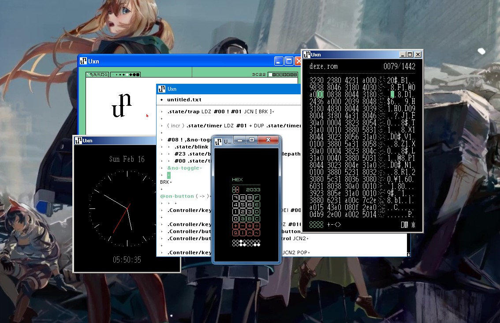
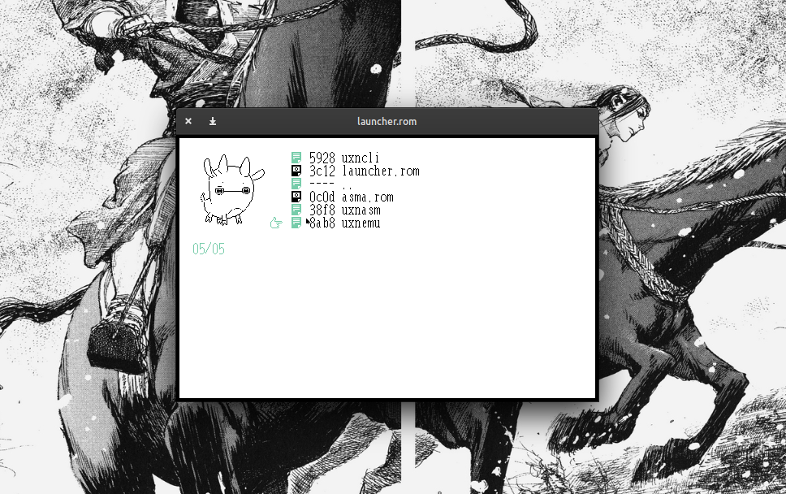
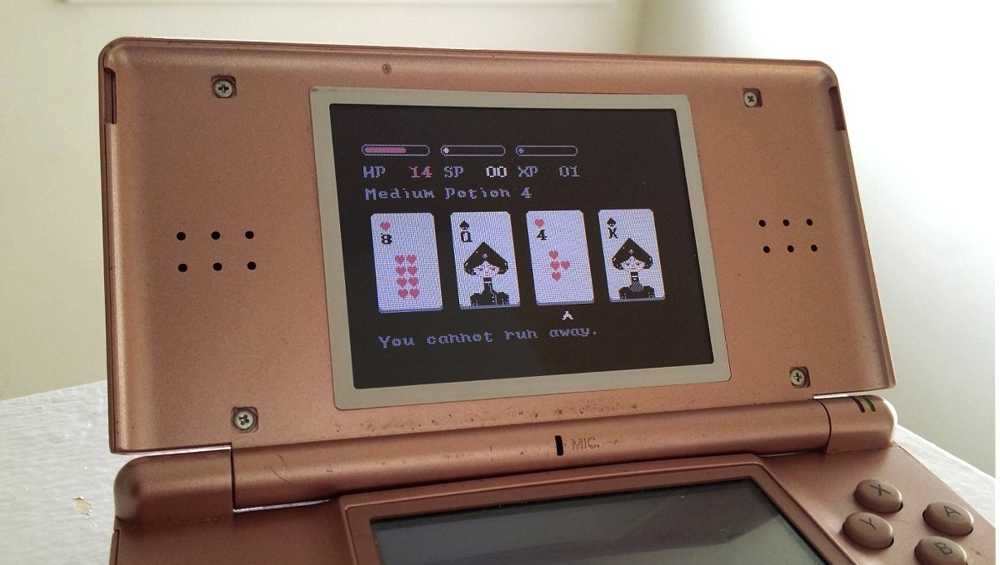

uxn guide
The same Uxn rom can be used on a variety of desktop computers, on tiny electronics, modern handhelds, and even in your, ugh, browser.
Our general cross-platform desktop emulator requires SDL2, alternatively, you could download the plain Win32 or X11 versions, but we will not cover these in this guide. If you don't have SDL2, here's how to get it:
sudo pacman -Sy sdl2 # Arch sudo apt install libsdl2-dev # Ubuntu sudo xbps-install SDL2-devel # Void Linux brew install sdl2 # OSX doas pkg_add sdl2 # openBSD
Startup
Double-click on uxnemu to launch it, on some Linux distribution, it might not be possible to do so, if for some reason uxnemu is not be clickable, navigate to the downloaded files in the terminal and launch it from there. To launch the ROM from the terminal, point the emulator to the target .rom file:
bin/uxnemu path/to/example.rom
The Uxn emulator can play rom files, which are small portable applications for the system. The Uxn package comes with basic applications, but there are many more to try, view the full list of available applications.
There are many ways to launch ROMs:
- With the launcher program, see preview image above
- By dragging .rom files onto the emulator window
- Via the terminal
Emulator Controls
- F1
- toggle zoom
- F2
- toggle debugger
- F3
- take screenshot
- F4
- load launcher.rom
Buttons
- L-Ctrl
- A
- L-Alt
- B
- L-Shift
- Select
- Home
- Start
Other Systems
Uxn can also run on classic consoles and on old electronics. Currently, there are ports(not all are complete) for GBA, Nintendo DS, Playdate, DOS, PS Vita, Raspberri Pi Pico, Teletype, ESP32, Amiga, iOS, STM32, STM32, IBM PC, and many more.
See the full list of emulators.
Need a hand?
The following resources are a good place to start: